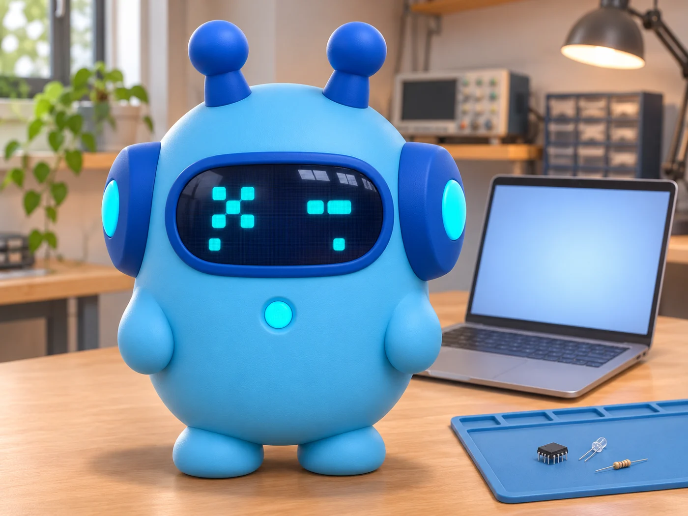

写进学院报道里的真实规模
- 近 200 人参加本科阶段撰写 AI 顶会论文分享会（2024.12 · CJ203）
- 百余名上大学子赴上海世博中心参加华为全联接大会（2024.09）
- 百余人报名宏嘉书院焊接与 Vibe Coding 双赛道专项赛（2025.11）
- 近百名学子走进华为鸿蒙生态学堂上海站参加技术实训（2025.11）
- 40 余名同学限额入选华为昇腾 AI 大模型创新实践课（2026.05 · GJ204）
2021 年成立 · 通信与信息工程学院团委指导 · 面向全校
平时做电路焊接课、华为昇腾 AI 实践课、名企研发中心参访，连续协办全校人工智能创新大赛。全校各专业可来，零基础也能从焊好第一个点开始。
社团吉祥物「小智」· 拖动旋转 3D 摆件，点一下换表情
宝山校区 翔英大楼
焊接课常在 T402 / T404 / T406 实验室，课程与赛事答辩多在 608 创客空间、GJ204、CJ203；校外参访曾赴上海世博中心与华为练秋湖研发中心。

从公开报道归纳出的五类常态活动，零基础新生与高年级同学都能找到切入口。
仅收录上海大学通信与信息工程学院官网公开报道中明确记载由本社团承办或协办的校院级赛事与开源训练营，每条均可核验原文。
平时不用等固定招新季，关注学院公众号看活动预告，直接来一次焊接课或分享会就行。
微信公众号：上海大学通信学院
社团招新与每次焊接课、昇腾课程、参访预告均在此公众号推送。